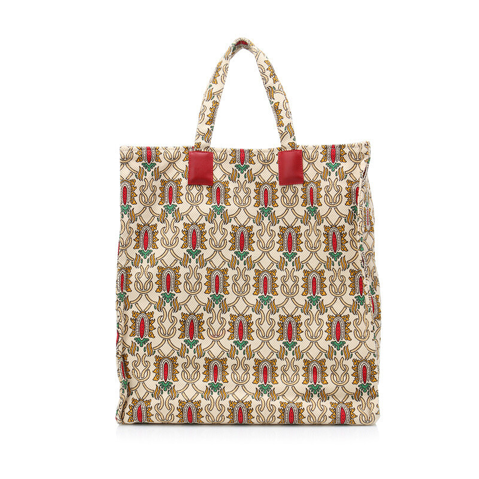
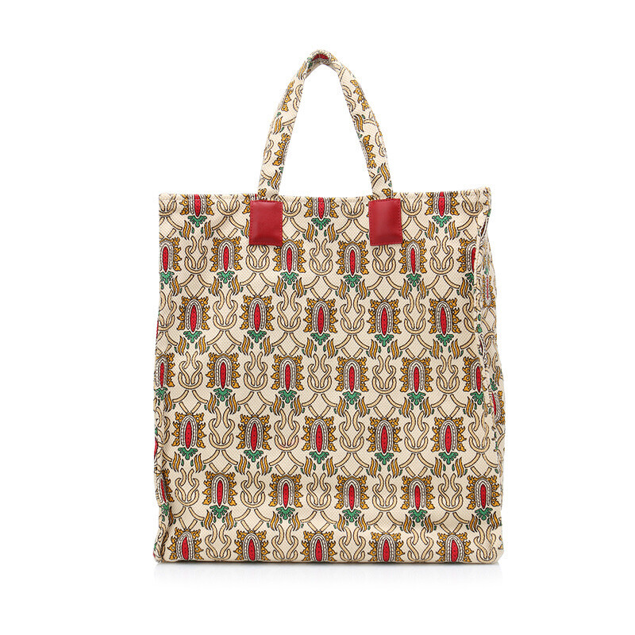

So,
what
is ?

So,
what
is ?
그린워싱이란
'green'
+
'white washing'
의 합성어
즉, 실제로는 친환경적이지 않지만
마치 친환경적인 것처럼 홍보하는
'위장환경주의'를 가리킨다.
Instance 1
STARBUCKS
스타벅스는 창립 50주년을 맞아
‘다회용 컵 사용 독려 캠페인’을 내세워
친환경 마케팅을 했으나
소비자들의 구매욕구를 자극하는
‘한정판 굿즈 마케팅’ 이라는 비판을 받았다.
또한 스타벅스는 매 시즌 md상품을 출시하여
새로운 쓰레기를 양산한다는 비판도 꾸준히 받고 있다.
TRUTH
Instance 2
INNISFREE
이니스프리는 ‘Paper Bottle’이라는
단어를 사용함으로써 친환경 제품임을
강조하는 마케팅을 펼쳤으나
실체는 종이로 둘러싸인 플라스틱 통으로
눈속임과 불필요한 이중 포장으로 비판을 받았다.
TRUTH
Instance 3
ECO BAG
캔버스 에코백은 본래 용도와 다르게
재활용 없이 남용되는
비닐봉지의 대체재로 유행이 시작되었으나
실제 재활용 횟수는 기대 횟수보다 현저히 적다.
심지어 에코백은 브랜드화를 넘어 점점 명품화 되어
그 본질이 퇴색됐다는 지적을 받고 있다.
 

TRUTH
ESG
'ESG'란
기업의 비재무적 요소인
환경(Environment), 사회(Social), 지배구조(Governance)
를 뜻하는 것으로,
'ESG 경영'이란 장기적인 관점에서
친환경 및 사회적 책임경영과 투명경영을 통해
지속가능한 발전을 추구하는 것이다.
ESG는 기업의 역할이 커짐에 따라
경제적 기여만큼이나 사회적 기여에도
적극적으로 나서야 한다는 공감대가 형성되면서
날이 갈수록 그 중요성이 더해지고 있다.
'시타'는 세계 최초로 플라스틱 퇴비화 시설을 갖춘 화장품 브랜드이다.
생분해 플라스틱 패키지에 담긴 화장품을 판매한 후,
소비자로부터 자사 공병을 수거해 퇴비로 재가공한다.
이러한 시스템으로 '시타'는 UN에서는 '세계 최초의 제로 웨이스트 기업'이라
칭하고 블룸버그에서는 '환경 문제 해결의 패러다임을 바꿨다'며 극찬하기도 했다.
이니스프리는 그린워싱 논란 이후 공병수거 캠페인을 비롯해
환경을 위한 다양한 활동들을 전개해왔다.
이니스프리는 공병을 반납하고 리워드를 받는
"공병 프리퀀시"를 론칭해 많은 호응을 얻은 바 있다.
또, 지구의 날이 있는 4월에 재활용 독려 이벤트를
론칭하고 리필 화장품을 만들며 리사이클 팝업 스토어 등을
운영하는 등 환경을 위한 꾸준한 행보를 보이고 있다.
파타고니아는 2011년 블랙프라이데이를 맞아 뉴욕타임즈에
"Don't Buy This Jacket" 광고를 게재해 크게 화제된 바가 있다
혁신적 문구로 소비자들의 눈길을 사로잡은 이 광고는
'자원 재활용 캠페인'이 목적이었다.
또, 파타고니아 창업주 '이본 슈나드'회장은 자사의 의결권 없는 주식 100%를
자연보호 비영리기구 '홀드퍼스트 컬렉티브'에 넘겼다.
파타고니아의 슬로건 중 하나는 "이제 파타고니아의 유일한 주주는 지구입니다"이다.
프라이탁은 업사이클 디자인의 선두주자이다.
업사이클은 단순히 자원을 재활용하는 차원을 넘어,
재활용품의 디자인을 향상시키고 활용도를 높여 제품을 재탄생 시키는 것이다.
프라이탁은 연간 50만개 정도의 가방을 만드는데,
가방 만드는 재료로 연간 390만 톤의 트럭 방수천,
7만 5천개의 자전거 폐튜브, 그리고 22만 개의 자동차 안전벨트를 사용한다.
그렇다고 이러한 기업들을
무조건 소비하는 것이
과연 좋은 선택일까요?
리바운드 효과(Rebound Effect)
리바운드 효과란
환경을 보호하기 위한 의도였지만
오히려 독이 되는 것을 말합니다.
그렇다면 리바운드 효과를
줄일 수 있는 방법은 무엇일까요?
바로
다회용품을 오랫동안 사용하는 것!
사용할수록 자연은 살아난다.
있는 것 부터 오래 사용합시다.